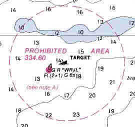

Link Index
MWDC
Home Page
Shipwrecks Page
Albert Galatin
Alice M. Colburn
Alice M. Lawrence
Ardandhu
Barge and Crane
California
Charles S. Haight
Chelsea
Chester Poling
City of Salisbury
Corvan
Dixie Sword
Edward Rich
French Van Gilder
Henry Endicott
Herbert
Herman Winter
Hilda Garston
HMCS St. Francis
James Longstreet
John Dwight
Kershaw
Kiowa
Lackawanna
Lunet
Mars
Pemberton
Pendleton
Pinthis
Port Hunter
Pottstown
Romance
Seaconnet
Trojan
USS Grouse
USS New Hampshire
USS Triana
USS Yankee
USS YSD
Vineyard Sound
Lightship
|
Description: Liberty Ship; Steel
Dimensions: length 417ft. 83/4in. width 56ft. 103/4in. depth 37ft. 4 in.
Tonnage: gross - 7176 other - Displacement - 14245
Propulsion: Steam; Single propellor
Machinery: One, 3 cylinder triple expansion Filer & Stowell Co. engine, Indicated Horsepower 2500, cylinder diameters 24.5", 37", 70" with a stroke of 48"; Two, Combustion Engineering Co. Inc., Oil Fired, Water Tube Boilers; Solid Bronze Propeller; Tailshaft fitted with a continuous liner
Cargo:
The Shipwreck
Date Sunk: 1950
Cause: Beached
Location: Cape Cod Bay, off Eastham, inside of Billingsgate Shoal
Coordinates: Latitude, 41o - 49.7' N Longitude,70o - 11.2' W
Loran:
October 26, 1943, gale force winds pushed the "Liberty Ship" James Longstreet onto the sand flats of Sandy Hook, New Jersey. She grounded on the flood tide so when the storm abated and the tide fell the steamer was high and dry. Badly damaged the vessel wasn't refloated until November 23rd. Towed to New York for further repairs, it was found that she was a constructive total loss. The Navy used her as a test ship until she was towed to Cape Cod Bay for use as a target.
By 1973, when William Quinn wrote Shipwrecks Around Cape Cod, the steamers remains were riddled with holes from bullets to bombs. She was likened to a "steel plated Swiss cheese". An aerial photograph taken by Quinn in 1978 shows that 30 odd years of bombing had obliterated the middle of the ship. Today little remains above the surface.
Back to Top
Dive Site Conditions
Depth in feet: maximum - minimum -
Visibility in feet: average -
Waters surrounding the grave of the James Longstreet are listed as a restricted area on Navigation Charts due to the unexploded ordinance, which litters the site.
Click on the image to go to the MapTech Map Server,
for additional navigation information.

Back to Top
Historical Background
Constructed: year - 1942; where - Houston, Texas
builder - Houston Shipbuilding Corp.
Construction details: Metal Arc Welded steel construction; 2 Decks, Orlop Deck forward; Frames Riveted; Transverse Framing; 7 Watertight Bulkheads to the Freeboard Deck, 1 Watertight Bulkhead to the Second Deck; 5 Hatches, 35' X 20'; 5 Holds 72' 6"; 1834 tons of Fuel Oil.
Crew: ; Master:
Owners: U.S. Maritime Commission, Washington, D.C.
Home or Hailing Port: Houston, Texas
Former Name(s) and date(s):
Official number: 242396 Country: U.S.A.
Other Comments: Filer & Stowell Co. engine, manufactured November 1942; Combustion Engineering Co. Inc. boilers, manufactured November 1942; Listed as a "Constructive Total Loss" in the 1948 American Bureau of Shipping register
Back to Top
Salvage
NONE REPORTED: Property of the United States Government
Back to Top
Sources:
MapTech Mapserver
Navy Vessels Lost off Massachusetts; NHC, July 19, 1994
Shipwrecks Around Cape Cod; Quinn, 1973
Shipwrecks Around New England; Quinn, 1979
The Record, "American Lloyds", American Bureau of Shipping; 1948
Wrecks Below; Luther, 1958
Back to Top
These files are under construction. Any information, specifically dive site related, would be greatfully appreciated.
Send comments to: Chris Hugo
Copyright © 2000 by Christopher C. Hugo
Massachusetts Board of Underwater Archaeological Resources
All Rights Reserved
|